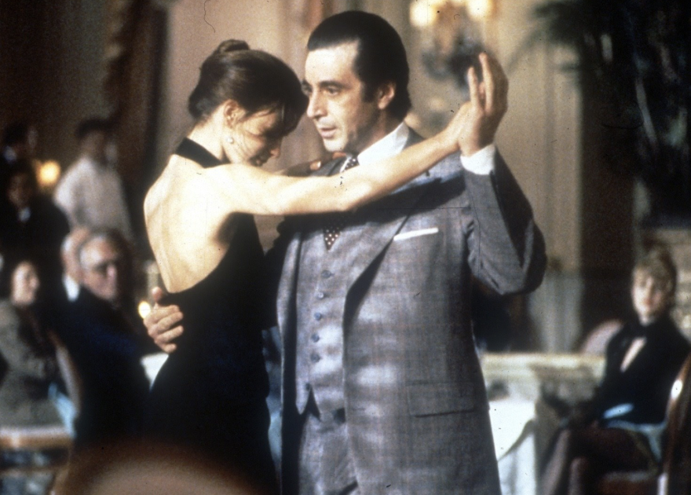

It's so exciting movie and have the best story and acting from all actors and very beautifull musics and scenes in there directed by my favorite director quentin tarrantino. in fact this movie had every thing i want from one movie

Great fantasy movie with great deep story written by J.R.R.tolkin
Very beautifull and emotional movie with perfect acting of Alpachino
